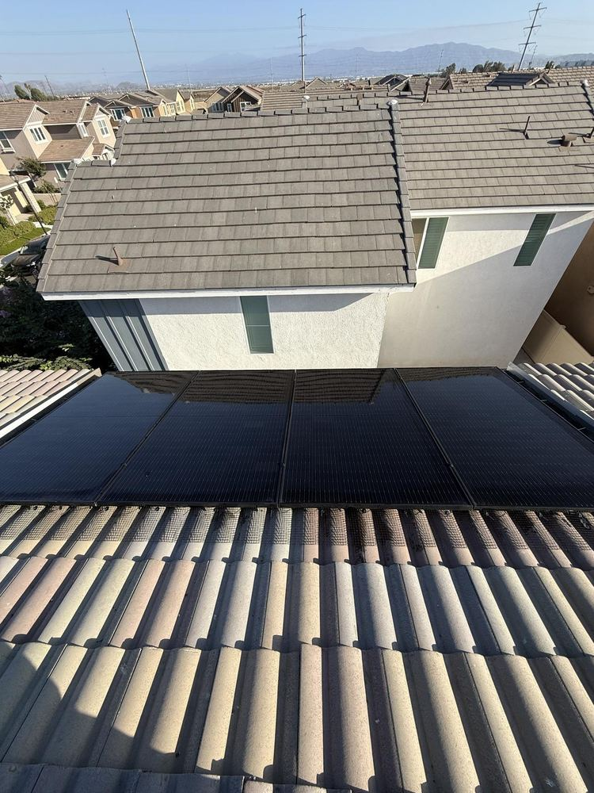
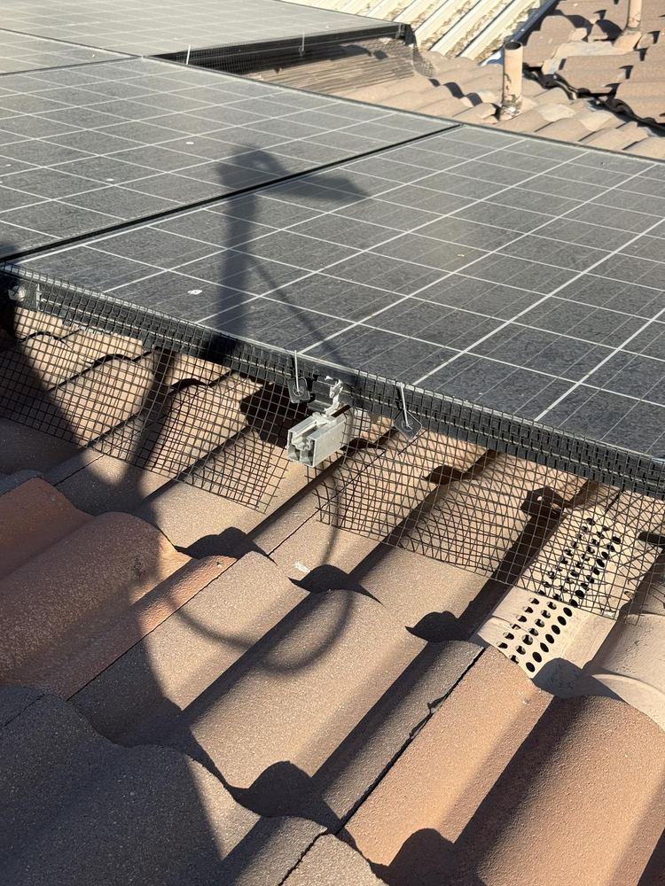

Pigeons Under Solar Panels: The Signs and What Fixes It
If you hear cooing on the roof at dawn, see droppings on the patio or walkway under the array, or notice twigs and feathers poking out at the edge of the panels, pigeons are very likely nesting in the gap between your solar panels and the roof. A rinse won't move them. Neither will spikes on top. What works is clearing out the nests and droppings, then closing that gap with mesh fitted around the array.

Why pigeons choose the space under your panels
The gap under a roof array is warm, shaded and out of the wind. On a High Desert roof that's about the only shade there is. Once one pair nests there, others follow. Pigeons also raise more than one brood a season, so the group on your roof next spring is usually bigger than the one that's there now. In Victorville, we see it on the large arrays in Eagle Ranch and the Bear Valley tracts.
Signs pigeons are nesting under your panels
- Cooing, scratching or flapping above the ceiling early in the morning.
- Birds landing at the roof edge or the top of the array and disappearing underneath.
- Droppings on the panels, in the gutter, and on the patio, driveway or walkway below.
- Twigs, feathers and debris at the panel edges or blowing into the yard.
- Streaks running down the tile or shingle below the array.
Two or more of these together usually means there's an active nest, not just a bird passing through.
Pigeon or dove? Check before anyone touches a nest
Not every bird under a panel is a rock pigeon, and the law doesn't treat them all the same. Rock pigeons, the common gray city pigeon, aren't native, and the U.S. Fish and Wildlife Service lists them among the birds the federal Migratory Bird Treaty Act doesn't cover. Other pigeons and doves can be protected. The mourning dove, a native dove, is on the federal list of protected migratory birds, and the Service's guidance on bird nests says an active nest of a protected bird, one with eggs or chicks, can't be destroyed without a permit. So if a mourning dove is nesting under your panels, you'll have to wait until the young have left. State and local rules can add their own requirements.
To tell the birds apart, the Cornell Lab of Ornithology's All About Birds has identification guides. A mourning dove is slimmer and tan, with a long pointed tail. A rock pigeon is stockier and usually bluish-gray, with a wide, rounded tail.
What happens if you leave it
- Droppings damage the roof. They're acidic. Left on tile, shingle, flashing and panel mounts, they stain and corrode, and a rinse doesn't undo it.
- The panels lose light. Droppings and nesting debris shade parts of the panels and bake on in summer heat.
- Dry nesting material sits next to wiring. Twigs, feathers and dried droppings pack against conduit and junction boxes.
- The mess comes down. Rain and wind move droppings off the roof onto patios, pets' areas and pools.
What doesn't work on its own
Spikes on top of the panels, a plastic owl or a hose rinse can move birds off one perch for a while. None of them closes the gap underneath, and that's where the nesting happens. We do include 2 to 3 reflective spinners with a pigeon proofing job, but as an extra next to the mesh, not instead of it.
What actually fixes it
- Clear it out. Nests, droppings and debris come out from under every affected panel, get bagged and hauled off, and the area is sanitized. It's the biggest part of the work. A roof with a year of nesting can take half a day before any mesh goes on.
- Close the gap. Rust resistant mesh is cut to the array and fitted to the openings being protected. Where the system allows, clips hold it to the lip of the panel frame, with nothing drilled into the panels or the roof. Air still moves under the panels; birds don't.
- Wash the panels. The included panel wash takes off what the birds left on top.
- Add spinners. We include 2 to 3 depending on the roof, and extras are $50 each installed.

What you may not need
- A whole roof wash. Our pigeon proofing covers the cleanup under and around the panels. A whole roof wash is a separate job and most homes don't need it.
- Pigeon proofing at all, yet. If birds only land on the panels and nothing's nesting underneath, a panel cleaning may be all you need for now. We'll tell you which one you have.
Before any attachment, check your panel manufacturer and lease terms. Clip mounting avoids drilling, but it isn't a promise about any particular warranty.
What it costs here
Our pigeon proofing starts at $450 for up to 12 panels on a single story home, including the cleanout, mesh, spinners and panel wash. Each panel past 12 is $50, and a two story home adds $125 for roof access. Two-story installations require additional ladder setup, equipment positioning, safety precautions, and labor time to access the roof and install the exclusion mesh properly. We'll confirm the written price before any work. The full breakdown with worked examples is on our pigeon proofing cost page.
Questions we hear
Will the pigeons come back after the mesh is on? They'll try for a while. The mesh is what keeps them out, and our lifetime workmanship warranty, in writing for the original customer, covers mesh or clip failure caused by our installation. Storm damage and entry through areas that weren't protected are excluded.
How long does it take? It depends on how long the birds have been there. A few weeks of droppings is quick. A year or more of nesting means a long cleanout before the mesh goes on, and some larger installations, like the big arrays in Oak Hills, can take a full day.
Do I need to be home? We'll arrange access with you when we confirm the appointment.
If you're seeing the signs, request a free inspection on our pigeon proofing page.